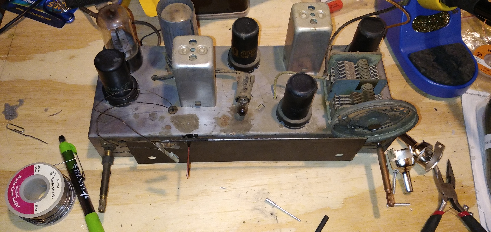

Community Service
Safe Net Ministries - Stafford
86 Main St, Stafford Springs, CT 06076 - (860) 851-9987
I have helped Safe Net several times throughout the years. My first time working with them was during Boy Scouts, where I assisted in a food drive by delivering bags, which request people to deposit food, to houses across Stafford. A week later, I assisted in picking them up and sorting through the food collected. I removed any food that went bad or had expired, and sorted the foods by type. I have worked here after that first food drive by assisting with more food drives and by distributing the food to those in need of it.
Stafford Elementary School
11 Levinthal Run, Stafford Springs, CT 06076 - (860) 684-6677
Being in my town's the Boy Scout troop, I ended up assisting in a landscaping project for the local elementary school. The school has a roundabout, for parents who are dropping of their kids, that had a large patch of grass in the center. With the troop and the cub scout packs in my town, I helped turn it into a garden.
Stafford Historical Society
5 Spring St, Stafford Springs, CT 06076 - (860) 684-7978
I am currently working on a website for the Stafford Historical Society. The website is still being worked on, so it's not public yet, but it is my most complex project I have ever worked on in the website realm. It features a database that will be full of a list, images, and data surrounding their many artifacts. It will have a account system where verified users can edit and add to the database. I started it as my Eagle project for Boy Scouts.
First United Methodist Church of Stafford Springs
8 Church St, Stafford Springs, CT 06076 - (860) 684-2468
I have been here many times- despite not being a member of the church or the Methodist religion. I have cleaned the yard of that place several times, I have helped set up for events and clean up after them, and I have worked in the soup kitchen there as well.

This is the top of my General Electric Model 226 radio before any work (in modern times) was done to it. The radio appears to have some non-original capacitors, so someone had already worked on it before. The GE radio is from the early 50's and it uses vacuum tubes.